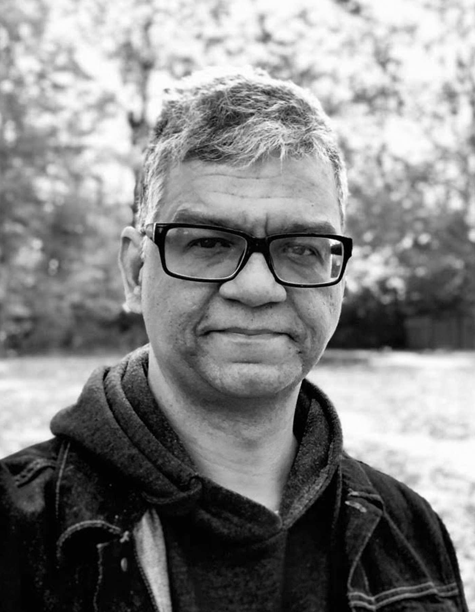
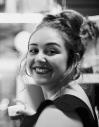

Fabio Cascadura
York University
York University

Denizá Barbosa
Universidade Federal de Pernambuco
Universidade Federal de Pernambuco

Fred Caju
Castanha Mecânica
Castanha Mecânica

Fernanda Sierra Suárez
Culture and Expression York University
Culture and Expression York University

Fahad Qayyum
SHADD_hub
York University
SHADD_hub
York University